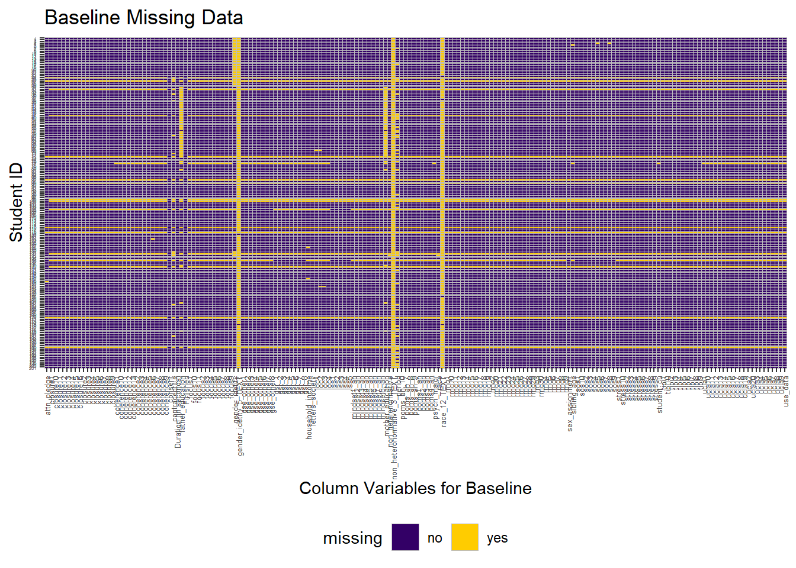
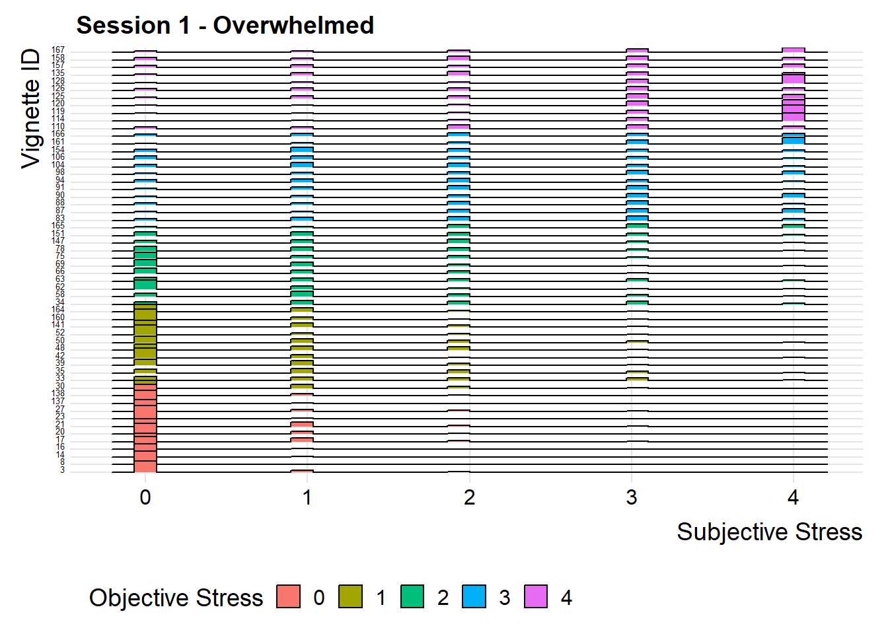
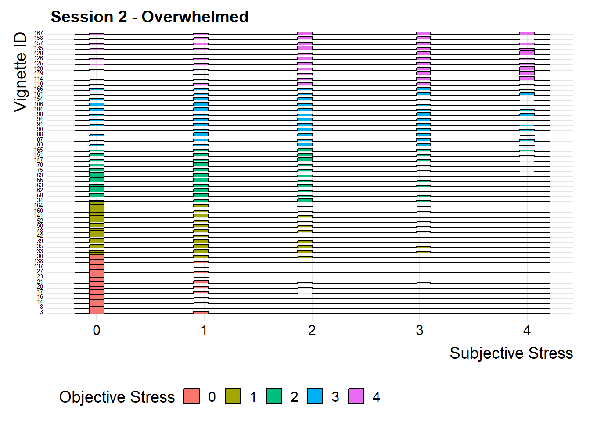
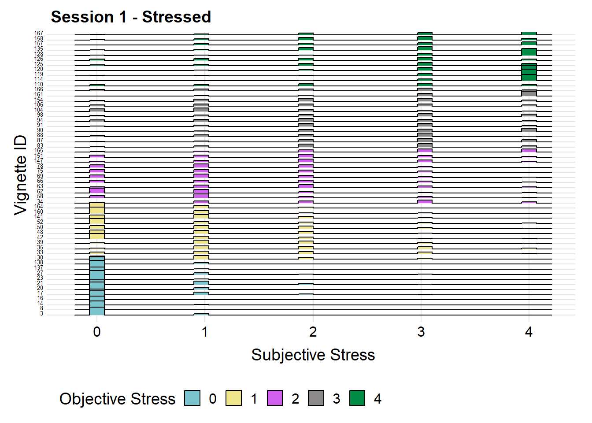

Chapter 5 Results
One major question of interest in this study was whether participant’s self-reports of how stressed they would be in each scenario corresponds with objective coder ratings of the severity of those scenarios, as coded by the Daily Inventory of Stressful Events (DISE) scheme (Midus, 1994). A priori, we expected that participant ratings of the stressfulness of the events would correspond with the objective coders’ ratings of the severity of the events. Both the subjective responses and the objective codes ranged from 0=not at all to 4=extremely. We were also interested in investing whether variance in subjective reports depended on the objective codes; for example, whether scenarios in the 2-3 range in objective severity were more variable while those in the high and low ranges of severity exhibited less variability. To explore these ideas, we build six histogram-style ridge plots, three for each session (session 1 or session 2 of the study) and one for each measure of stress (how ‘stressed’ did you feel? how ‘overwhelmed’ did you feel? and an aggregate score that is the mean of how ‘stressed’ and ‘overwhelmed’ participants felt). In the plots below, the x-axis is subjective ratings of stressed, overwhelmed, and the aggregate and the y-axis is the ID number for the vignettes. The y-axis is ordered such that vignettes at the top are the most objectively severe scenarios (4=extremely stressful) and decrease down the axis to the bottom, which contains vignettes rated as least objectively severe (0=not at all stressful). The objective severity of the scenarios is also color-coded, as depicted in a legend to the right of the plots. 
We have several key takeaways from these visualizations. All discussion refers to all three ways of operationalizing stress: how ‘stressed’, how ‘overwhelmed’, and the aggregate of ‘stressed’ and ‘overwhelmed’ that paticipants reported. First, we see that participants generally report that they would be less stressed than expected by the objective coding scheme; many participants rate scenarios that are objectively a ‘1’ as a ‘0’, those that are objectively a ‘2’ as a ‘1’, and so on. However, the under-reporting is most severe for the low-range objective stressors (the 1’s and 2’s). At the same time, we do see the expected general increase in mean subjective ratings of stress across the objective range, with more objectively severe stressors being rated as more subjectively stressor. Next, we observe less variability in the high and low ranges of the scale, particularly in the ‘0’ range. This implies that participants generally perceive very non-severe and very severe stressors as consensually stressful (i.e. little disagreement about the stressfulness of these scenarios), while subjective interpretation and therefore variability emerges in the ‘2’ and ‘3’ range of the objective scale. We think this visualization does a nice job of laying out the correspondene between objetive coding of the stressors and subjective interpretations of them.
################We were also interested in visualizing the distribution of responses to the two questions asked for each scenario: ‘have you experienced something like this before?’ (1=yes) and ‘was it easy to imagine yourself in this scenario?’ (1=yes). We therefore calculated the proportion of participants who responded yes to each question and visualized a box and whisker plot of those proportions. We chose box and whisker plots because we are interested in finding outliers; in the next iteration of the study we will likely exclude scenarios that were extreme in terms of describing events that the sample hadn’t experienced and being difficult to imagine oneself in the scenario.

These visualizations reveal several important things about the study. First, participants generally indicated that it was easy to imagine themselves in the scenarios (means for both session were above 90%), even though they hadn’t necessarily been in situations exactly like them before (means for both sessions around 45%-50%). However, there were a few scenarios that participants found difficult to imagine: scnarios 165 and 48. In the next iteration of the study, we will likely remove these scenarios and replace them with situations that are more commonly experienced by undergraduate students.